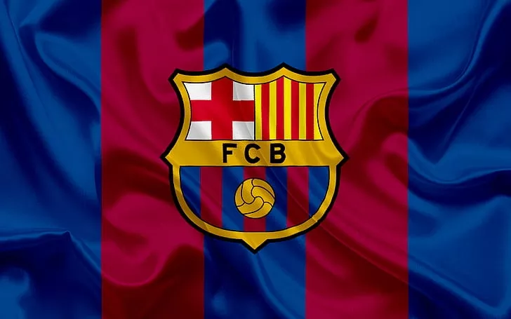
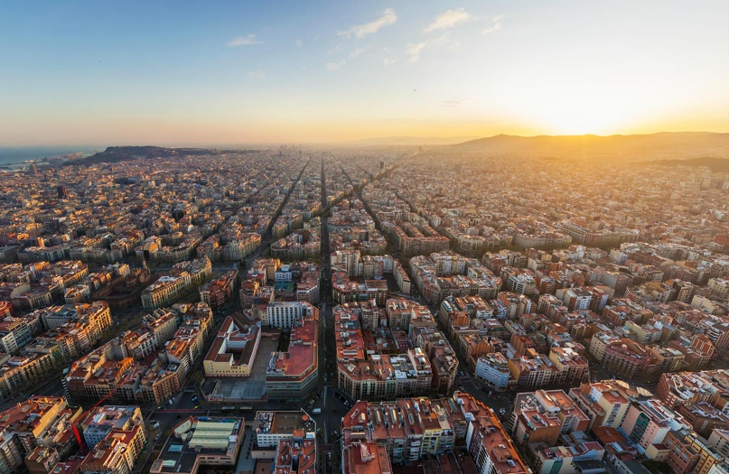

Sergi Roberto Karniser (7 fevral 1992-ci ildə anadan olub) — yarımmüdafiəçi kimi çıxış edən ispaniyalı futbolçu. O, La Liqa komandalarından biri olan Barselonada oynayır.
Alexandro Balde (18 oktyabr 2003, Barselona) — ispaniyalı futbolçu, sol cinah müdafiəçisi. İspaniya milli komandasının və Barselona FK-nın oyunçusu.
Andreas Bødtker Christensen (10 aprel 1996-cı ildə anadan olub) La Liqa klubu Barselona və Danimarka milli komandasında mərkəz müdafiəçisi kimi çıxış edən danimarkalı peşəkar futbolçudur.
Fermín López Marín (11 may 2003-cü ildə anadan olub) — Barselona Atletik və FC Barselona komandalarında yarımmüdafiəçi kimi çıxış edən ispan peşəkar futbolçudur..
Hector Fort García (2 avqust 2006-cı ildə anadan olub) — Barselona Atletik klubunda sağ cinah müdafiəçisi kimi çıxış edən ispan futbolçudur.
Jules Olivier Koundé (Fransızca tələffüz: [ʒyl ɔlivje kunde]; 12 noyabr 1998-ci ildə anadan olub) La Liqa klubu Barselona və Fransa milli komandasında mərkəz müdafiəçisi və ya sağ cinah müdafiəçisi kimi çıxış edən fransız peşəkar futbolçudur.
Robert Levandovski (Polşa tələffüzü: [ˈrɔbɛrt lɛvanˈdɔfskʲi] ⓘ; 21 avqust 1988-ci ildə anadan olub) La Liqa klubunun Barselona klubunun hücumçusu kimi çıxış edən və Polşa milli komandasının kapitanı olan polşalı peşəkar futbolçudur. O, bütün zamanların ən yaxşı hücumçularından biri, həmçinin Bundesliqa və Bayern Münhen tarixinin ən uğurlu oyunçularından biri kimi qəbul edilir. O, klub və ölkə üçün 600-dən çox yüksək karyera qolu vurub
Oriol Romeu Vidal (İspan tələffüzü: [oˈɾjol roˈmew]; 24 sentyabr 1991-ci ildə anadan olub) La Liqa klubu Barselonada müdafiə meyilli yarımmüdafiəçi kimi çıxış edən ispan peşəkar futbolçusudur.
İgnacio "İñaki" Peña Sotorres (2 mart 1999-cu ildə anadan olub) La Liqa klubunun Barselona klubunda qapıçı kimi çıxış edən ispan peşəkar futbolçusudur.
Ferran Torres García (29 fevral 2000-ci ildə anadan olub) La Liqa klubu Barselona və İspaniya milli komandasında hücumçu və ya cinah yarımmüdafiəçisi kimi çıxış edən İspan peşəkar futbolçusudur.
Yamin Yamal Nasraoui Ebana (13 iyul 2007-ci ildə anadan olub) La Liqa klubu Barselona və İspaniya milli komandasında sağ cinah müdafiəçisi kimi çıxış edən ispan peşəkar futbolçudur. O, dünyanın ən perspektivli gənc oyunçularından biri kimi qəbul edilir.